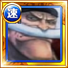
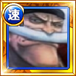

| Nom | Amitié entre deux Empereurs Shanks et Barbe Blanche |
| Type |
DEX (Shanks) / QCK (Barbe Blanche) |
| Classe 1 |
|
| Classe 2 |
|
| Coût | 55 |
| Combo |
|
| Emplacements de pouvoirs | 5 |
|
|
|
| HP |
|
| ATK |
|
| RCV |
|
|
|
|
| Captain Ability |
|
| Special (23→18 puis 16) |
|
| Crewmate Ability 1 |
|
| Effets du changement | Libère le personnage du "Lien des cercles", rend les cercle [STR] avantageux pour l'équipe et multiplie le multiplicateur de combos par 0,9 pendant un tour. |
|
|
|
| Crewmate Ability 2 | Rend les cercles [DEX] et [QCK] avantageux pour tous les personnages. |
| Potential Ability 1 | Si un coup "PARFAIT" est effectué avec ce personnage, 40% de chances de faire 4% l'ATK du personnage en dégâts additionnels. |
| Si un coup "PARFAIT" est effectué avec ce personnage, 50% de chances de faire 5% l'ATK du personnage en dégâts additionnels. | |
| Si un coup "PARFAIT" est effectué avec ce personnage, 70% de chances de faire 6% l'ATK du personnage en dégâts additionnels. | |
| Si un coup "PARFAIT" est effectué avec ce personnage, 80% de chances de faire 8% l'ATK du personnage en dégâts additionnels. | |
| Si un coup "PARFAIT" est effectué avec ce personnage, 90% de chances de faire 10% l'ATK du personnage en dégâts additionnels. | |
| Potential Ability 2 | Ajoute 75 points d'ATK au tour suivant lorsque des dégâts sont subis. |
| Ajoute 100 points d'ATK au tour suivant lorsque des dégâts sont subis. | |
| Ajoute 200 points d'ATK au tour suivant lorsque des dégâts sont subis. | |
| Ajoute 250 points d'ATK au tour suivant lorsque des dégâts sont subis. | |
| Ajoute 300 points d'ATK au tour suivant lorsque des dégâts sont subis. | |
| Potential Ability 3 | Restaure les HP à hauteur de 1 fois les RCV du personnage si ce dernier réussit un “PARFAIT” lorsque les HP restants sont inférieurs ou égaux à 10%. |
| Restaure les HP à hauteur de 1 fois les RCV du personnage si ce dernier réussit un “PARFAIT” lorsque les HP restants sont inférieurs ou égaux à 20%. | |
| Restaure les HP à hauteur de 1,5 fois les RCV du personnage si ce dernier réussit un “PARFAIT” lorsque les HP restants sont inférieurs ou égaux à 20%. | |
| Restaure les HP à hauteur de 1,5 fois les RCV du personnage si ce dernier réussit un “PARFAIT” lorsque les HP restants sont inférieurs ou égaux à 30%. | |
| Restaure les HP à hauteur de 2 fois les RCV du personnage si ce dernier réussit un “PARFAIT” lorsque les HP restants sont inférieurs ou égaux à 30%. | |